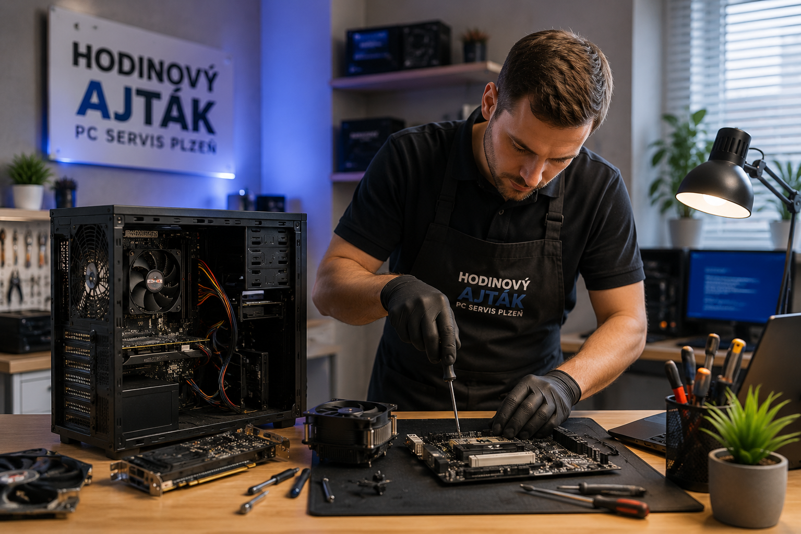

Opravy PC a notebooků
Diagnostika závad, výměna dílů, nefunkční start, pomalý počítač, přehřívání, čištění a běžné hardwarové potíže.
Hodinový ajťák Jan Bidlo řeší pomalé počítače, instalace Windows 11, výměny SSD disků, tiskárny, Wi‑Fi, zálohy dat i běžné IT problémy pro domácnosti a menší firmy.

Web je postavený tak, aby zákazník rychle našel konkrétní problém: pomalý počítač, Windows, notebook, data, viry, Wi‑Fi nebo tiskárnu.
Diagnostika závad, výměna dílů, nefunkční start, pomalý počítač, přehřívání, čištění a běžné hardwarové potíže.

Čistá instalace, ovladače, aktualizace, nastavení účtu, přenos základních dat a zprovoznění potřebných programů.

Výměna pomalého HDD za SSD, klonování systému, rozšíření paměti RAM a nastavení počítače tak, aby znovu svižně fungoval.

Odstranění virů, reklamních lišt, podezřelých programů, kontrola startu systému a doporučení bezpečného používání.

Přenos fotek, dokumentů, pošty a profilů do nového počítače. Záloha před reinstalací a základní obnova dat z vadného disku.

Nastavení routeru, Wi‑Fi, sdílení, tiskáren, připojení zařízení a drobná IT pomoc doma nebo ve firmě.
Nejdříve zjistím, co se opravdu děje. Pokud je oprava jednoduchá, často ji vyřeším rovnou. U složitější závady řeknu, co dává ekonomický smysl.
Vyřeším pomalý start, zasekávání, plný disk, problém s tiskárnou, internetem, e‑mailem, aktualizacemi nebo novým notebookem. Pomohu také s přenosem fotek, dokumentů a nastavením běžných programů.
Zprovoznění počítačů, tiskáren, Wi‑Fi, routerů, síťových disků, záloh a základní správa pracovních stanic. Vhodné pro kanceláře, provozovny a živnostníky v Plzni.
Přesná cena závisí na závadě, přístupu k dílům a rozsahu práce. U větších oprav se nejdřív domluví postup.
Ceny jsou orientační. Přesná cena závisí na závadě, dostupnosti dílů a rozsahu práce.
Nejrychlejší je zavolat. Provozovna je dostupná po předchozí telefonické domluvě.
Parkování: zaparkujte na začátku vjezdu na pozemek.
Zavolejte, popište závadu a domluvíme návštěvu v provozovně nebo výjezd.
Praktické návody a informace z oblasti servisu počítačů, notebooků a Windows.